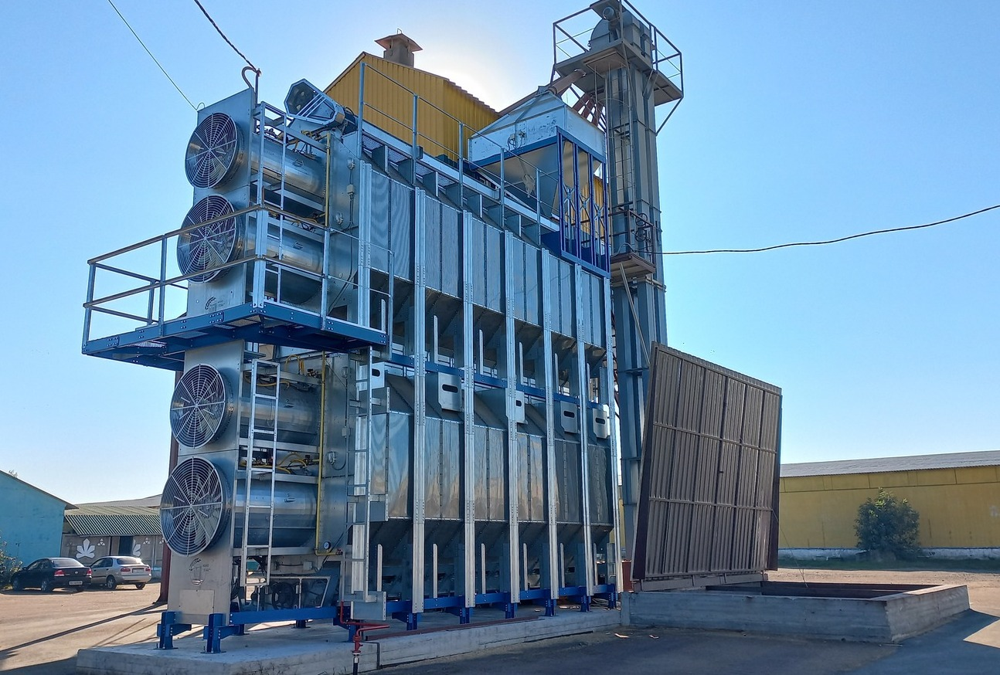

ДВОМОДУЛЬНІ СУШАРКИ

Особливістю 2-модульної зерносушарки «Agro Star™» з 3-ма або 4-ма вентиляторами та пальниками є можливість одночасного нагріву та охолодження зерна в сушарці, отримуючи при цьому готовий продукт для подальшого очищення або зберігання.
Перехресний рух зерна між модулями запобігає його перегріву, забезпечує рівномірність сушіння та економію енергоносіїв. При переміщенні зерна з однієї сторони сушарки на іншу, внутрішній (більш прогрітий) шар стає зовнішнім (менш прогрітим).
Крім цього завдяки двом і більше зонам нагріву можливо керувати температурою зерна, яке проходить через сушарку, отримуючи відмінну якість кінцевого продукту. При охолодженні зерна в зовнішніх бункерах з активним вентилюванням збільшується продуктивність сушарки та додатково знімається 1-2 % вологи завдяки вентиляції холодним повітрям.
2-модульні сушарки з 3-ма або 4-ма вентиляторами та пальниками
| Модель | 0623 | 0624 | 0723 | 0724 | 0823 | 0824 | 0924 | 1024 | 1124 | 1224 | 1324 |
|---|---|---|---|---|---|---|---|---|---|---|---|
| Кількість секцій, шт. | 6 | 6 | 7 | 7 | 8 | 8 | 9 | 10 | 11 | 12 | 13 |
| К-сть вентиляторів, шт. | 3 | 4 | 3 | 4 | 3 | 4 | 4 | 4 | 4 | 4 | 4 |
| Довжина, мм. | 5800 | 5800 | 6400 | 6400 | 7030 | 7030 | 7640 | 8250 | 8860 | 9460 | 10300 |
| Ширина, мм. | 2430 | 2430 | 2430 | 2430 | 2430 | 2430 | 2430 | 2430 | 2430 | 2430 | 2430 |
| Висота, мм. | 7800 | 7800 | 7800 | 7800 | 7800 | 7800 | 7800 | 7800 | 7800 | 7800 | 7800 |
| Об'єм, м³ | 21,1 | 21,1 | 24,6 | 24,6 | 28,1 | 28,1 | 31,6 | 35,2 | 38,7 | 42,2 | 45,7 |
| Ел. потужність, кВт. | 46 | 49,5 | 46 | 49,5 | 57 | 64,5 | 64,5 | 75,5 | 75,5 | 75,5 | 75,5 |
| Продуктивність, т/год. (кукурудза) | |||||||||||
| 29-14 % (без охол.) | 10,5 | 10,5 | 11 | 11 | 14,5 | 14,5 | 16 | 18 | 19,5 | 22 | 24 |
| 24-14 % (без охол.) | 17 | 17 | 18 | 18 | 25 | 25 | 26 | 31 | 35 | 38 | 40 |
| 19-14 % (без охол.) | 28 | 28 | 31 | 31 | 40 | 40 | 43,5 | 50,5 | 52,5 | 58 | 65 |
| 29-14 % (з охол.) | 7 | 7 | 8 | 8 | 10 | 10 | 11 | 12,5 | 13,5 | 15 | 16 |
| 24-14 % (з охол.) | 11 | 11 | 12 | 12 | 17 | 17 | 18 | 21 | 21,5 | 25,5 | 26 |
| 19-14 % (з охол.) | 18 | 18 | 21 | 21 | 27 | 27 | 30 | 34 | 36 | 40 | 44 |